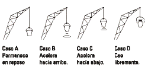

NO ME SALEN
PROBLEMAS RESUELTOS DE FÍSICA DEL CBC
(Leyes de Newton, vínculos)
|
|

|
| |
 |
FIS d1.01- Un balde cuelga del cable de
una grúa. Analizar las interacciones presentes y
hacer el diagrama de cuerpo libre del balde en
cada caso. Comparar las intensidades de las
fuerzas entre un caso y otro. Si la masa del balde es 40 kg, determinar la
fuerza que ejerce el cable, cuando el balde: |
a- Permanece en reposo.
b- Sube con velocidad constante de 2 m/s.
c- Sube, aumentando su velocidad a razón de 2 m/s cada segundo.
d- Sube, disminuyendo su velocidad a razón
de 2 m/s en cada segundo. |
 |
|
Este problema es el más importante de la guía. O debe serlo, porque figura repetido un montón de veces en diferentes versiones y situaciones. Mirá (y si querés hace un toque en cada uno y volvé) se repite, por lo menos en los ejercicios 1.4 (el que sigue), 1.13 más adelante, 20 de los adicionales, 1.4 de energía, y en otros más. Y de verdad que es un problema bien sencillo, pero que apela a esas cuestiones básicas, absolutamente básicas que si no las cazaste bien, pero BIEN, entonces el resto vale bastante poco. Así que... prestale atención.
Primero te advierto, por si no te diste cuenta, que el dibujito de arriba no se condice con la serie de ítems de lo que sigue. Van por separado. Al finalizar el problema vuelvo sobre el dibujo, ¿ok?
En los cuatro casos (dinámicamente muy parecidos) actúan sólo dos fuerzas. El peso del balde, P, que es la fuerza con que la Tierra -objeto sólido, redondo y acogedor- lo atrae como si quisiera engullirlo. Y la fuerza que hace la cuerda, T, que tira hacia arriba (las cuerdas sólo pueden hacer eso: tirar en la dirección en que se encuentran, no pueden empujar ni hacer esfuerzos laterales). ¡Y ninguna otra! Si estás tentado de agregar alguna(s) fuerza(s) má(s)... estás fregado(a). Toda esta discusión siempre la hago con un DCL.
En todos los casos usaremos la ecuación de Newton, que dirá: |
|
Acordate que
P = m . g
de modo que si m = 40 kg
entonces
P = 400 N |
|
|
Alcanza con una sola ecuación pues ambas fuerzas son verticales. Y si elijo un SR positivo hacia arriba la ecuación queda así:
T — P = m a
En cada uno de los cuatro casos varía la aceleración (y eso modifica el segundo miembro). Luego, del primer miembro sólo puede modificarse fuerza que hace la grúa, o sea la tensión de la cuerda, ya que el peso del balde es constante. |
|
 |
Casos a y b. Ambos casos son idénticos desde el punto de vista dinámico. Ya sea que esté parado, que suba o baje a velocidad constante del valor que sea es lo mismo... la aceleración vale cero.
T — P = 0
T = P
|
|
Caso c. Subir aumentando la velocidad en 2 m/s cada segundo es lo mismo que decir que tiene una aceleración hacia arriba de 2 m/s². (En estos casos uno dice "a papá mono con bananas verdes"... no importa, ellos entienden)
T — P = m a
T = m a + P
|
|
Caso d. Sube pero cada vez más despacio... la aceleración apunta hacia abajo, en nuestro SR será negativa. (a = — 2 m/s² )
T — P = m a
T = m a + P
|
|
|
|
| DISCUSION: Como ves, esto es muy sencillo. Hay sólo dos fuerzas, la más grande gana y acelera el cuerpo para su lado. Nada más. Es cierto, exageré un poquito el largo de los vectores que representan la tensión. Pero lo hice para remarcar la idea de cuál es la fuerza que está variando entre caso y caso y cuál es su consecuencia. Si lo hacemos al revés, también vale. De hecho el último caso dibujado, "cae libremente" no está representado por ninguno de los enunciados que resolvimos, ¿cuál será su particularidad? (R.: T = 0 ) |
 |
| |
| DESAFIO: ¿Cuánto valdrá la tensión para que acelere hacia arriba con una aceleración igual a g? ¿Por qué a mucha gente le cuesta encontrarle el sentido a esta pregunta? |
|
Algunos derechos reservados.
Se permite su reproducción citando la fuente. Última actualización dic-06. Buenos Aires, Argentina.
|
|
|